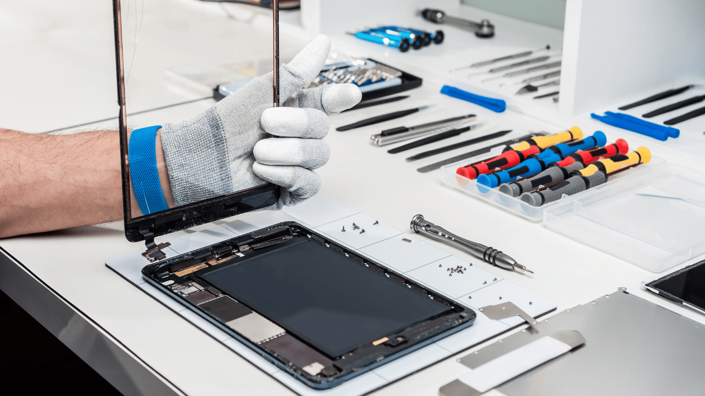
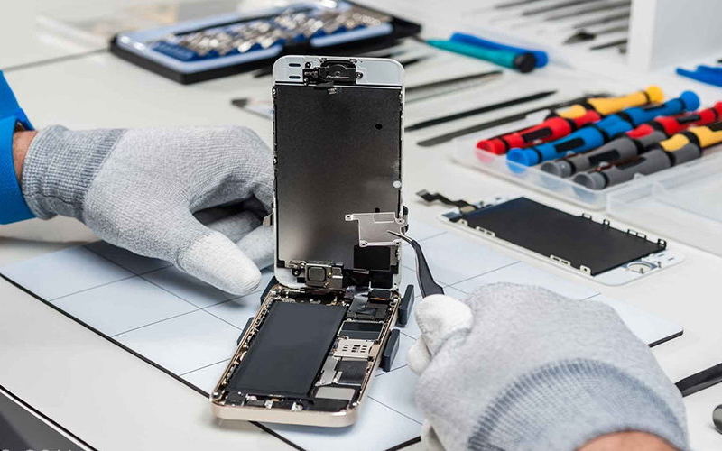
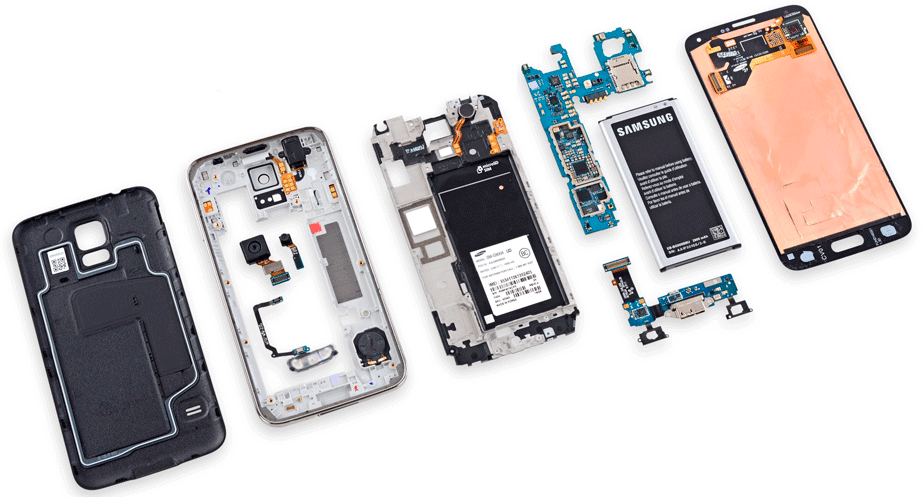
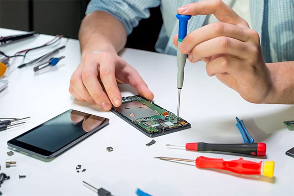
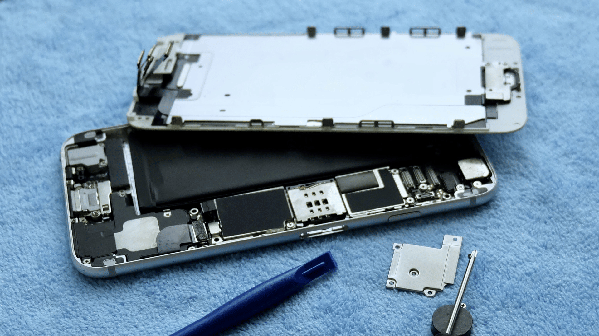

Ремонт экранов смартфонов и планшетов
->




- Замена разбитых экранов и тачскринов
- Устранение дефектов изображения (полосы, пятна)
- Оригинальные запчасти и проверенные аналоги
- Доступные цены и бесплатная диагностика
Ваш телефон или планшет упал, и теперь экран покрыт трещинами? Не спешите покупать новое устройство! Мы предлагаем профессиональный ремонт экранов смартфонов и планшетов любой сложности.
Отзывы
Ирина
Всё отлично